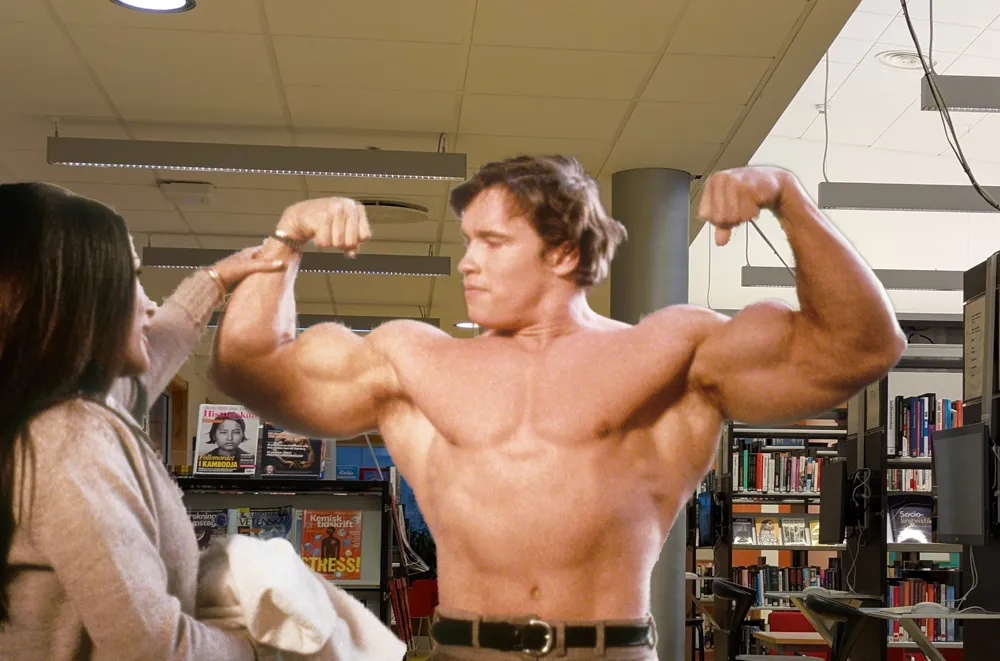

Reklam

Arnold Schwarzenegger går med i Konstklubben
Östras Konstklubb etablerade sig för några dagar sedan som den nya klubben i gymnasiets korridorer. Klubbens mål är att ge elever verktygen för att uttrycka sig själva kreativt med hjälp av skolans bildsal. Den attraherade snabbt stora figurer inom konst men också personer som aldrig tidigare skådats på ateljégolvet, bland annat Arnold Schwarzenegger.
Konstklubben må se ut att vara ett organ för bara Östras elever, speciellt med tanke på att klubben uttryckligen säger så. Men med tillräckligt stora namn kan undantag göras. Förövrigt rapporterar Gymnasieantagningen Storsthlm att mängden B-, C- och D-list kändisar som ansöker till skolan mer än fördubblats i jämförelse med tidigare år på grund av den nya organisationen. Schwarzenegger har enligt källor skådats i bildsalen med pensel i hand, djupt fokuserad på sin konst. Konstklubben kommer ha sin första öppna samling i bildsalen onsdag vecka 5 där alla är välkomna. Schwarzenegger sa efter sin trial-period hos klubben "I'll be back!".